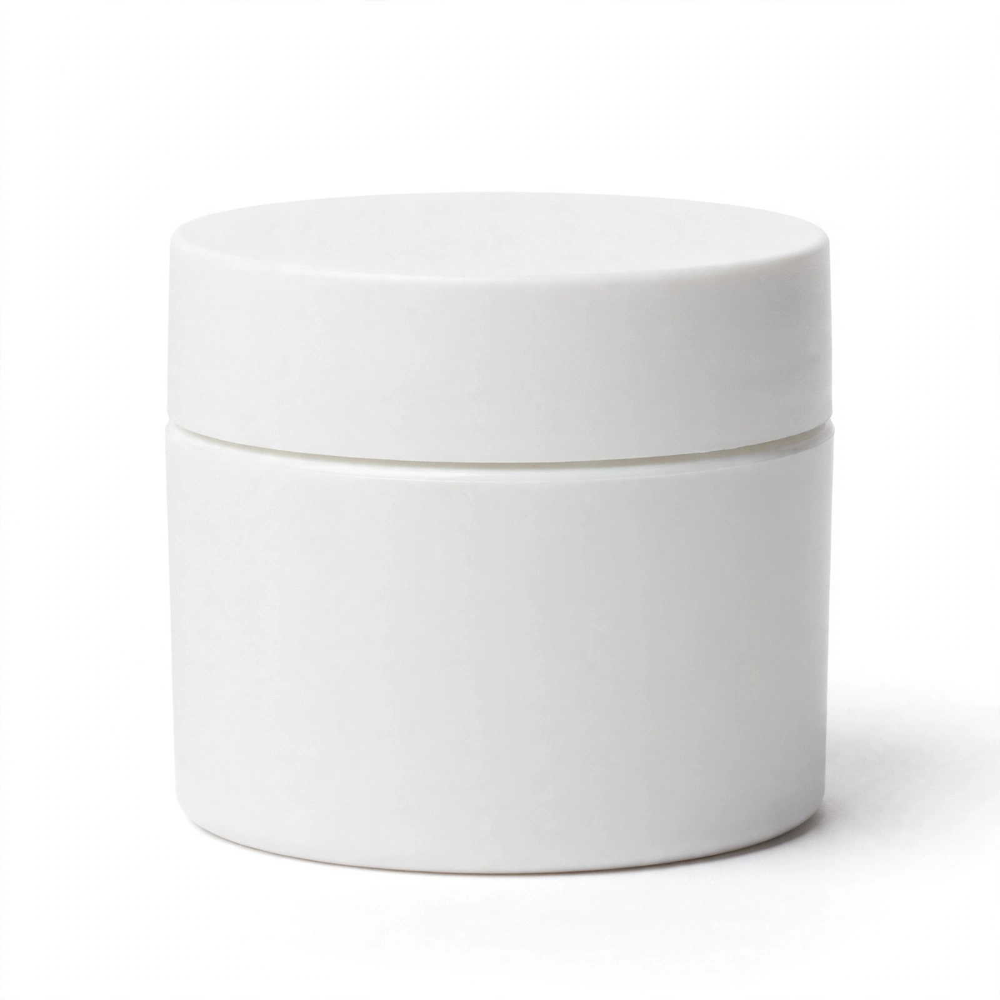

Marca própria · MOQ 500–1,000 unidades por SKU
O que é creme de alta hidratação de marca própria?
Um creme facial construído em torno de hialuronato de sódio, ceramida NP e esqualano, para marcas que querem uma história hidratante de cuidado de barreira. Inicie-o sob sua própria marca no MOQ 500–1,000 unidades, ou personalize-o com a equipe da fábrica. Esta é uma fórmula de referência: cada pedido é amostrado e personalizado de acordo com os requisitos da sua marca – não há produtos padrão fora da prateleira.
- Formato
- Creme facial
- Direcção da chave
- Ácido hialurónico, ceramida e esqualano, hidratação intensiva
- Melhor para
- Marcas com uma história hidratante de cuidados de barreira
- Embalagem sugerida
- Pote, 150 g – confirmar por pedido
- MOQ
- 500–1,000 unidades por SKU
- Tempo de execução
- Confirmar por pedido
Sobre esta fórmula
Por que as marcas começam a partir desta fórmula
Um creme facial construído em torno de hialuronato de sódio, ceramida NP e esqualano, para marcas que querem uma história hidratante de cuidado de barreira. Esta é uma fórmula de referência: cada pedido é amostrado e personalizado de acordo com os requisitos da sua marca – não há produtos padrão fora da prateleira.
Por que as marcas escolhem esta fórmula
- Hialuronato de sódio, ceramida NP e esqualano — o núcleo deste creme facial, numa direcção de hidratação intensiva.
- Hidratação intensiva — a direcção-chave indicada para esta nata.
- Uma história hidratante de cuidados de barreira — uma história clara para as marcas que querem um hidratante de cuidados de barreira.
- Pote, 150 g — a embalagem sugerida é um frasco de 150 g, confirmado por encomenda.
Como as marcas o usam
O produto herói de uma linha hidratante de cuidados de barreira; um complemento natural para marcas que já vendem cremes e querem um passo de alta hidratação; ou o primeiro creme da gama de lançamento de uma nova marca.
Perguntas frequentes
Este é um produto acabado que posso encomendar?
Não. Esta é uma fórmula de referência. Você começa a partir dele, personalizá-lo com a equipe de fábrica, e aprovar uma amostra antes da produção em massa.
Qual é a quantidade mínima de encomenda?
500–1,000 unidades por SKU.
Posso alterar o formato do pacote?
Sim. O pacote sugerido é um frasco de 150 g, e o formato do pacote é confirmado por pedido. A lista completa do INCI e as concentrações finais são confirmadas por pedido, e o preço é cotado por pedido.
OEM de ponta a ponta para sua marca
O que lidamos para a sua marca
- Desenvolvimento da fórmula — começar a partir desta fórmula pronta, ou ajustar o nível, a textura e a direção da fragrância com a equipe de fábrica.
- Produção a granel — MOQ 500–1,000 unidades por SKU, com controlos de qualidade em todas as fases.
- Rotulagem privada — o seu logotipo e obras de arte na garrafa, frasco, tubo ou caixa; obras de arte aprovadas antes da impressão.
- Apoio regulamentar — SGS ISO 22716 verificada; arquivos específicos do mercado (EU CPSR / CPNP, US FDA / MoCRA, Halal) confirmados por pedido.
Esta fórmula pode ser personalizada?
Sim. Comece a partir desta fórmula destaque como sua referência, em seguida, personalizá-lo com a equipe de fábrica para os requisitos da sua marca. De qualquer forma, você aprova uma amostra antes da produção a granel — ver como funciona a amostragem.
O que enviar com o seu inquérito
- O seu mercado-alvo (UE, EUA, Médio Oriente ou outros) — as necessidades de certificação diferem consoante o mercado
- Formato de embalagem e tamanho que você prefere
- Quantidade por SKU (MOQ 500–1,000)
A lista completa do INCI e as concentrações finais são confirmadas por pedido. Nenhum preço fixo é publicado; o preço é citado por pedido.
Fórmulas relacionadas

MOQ 500–1,000
Creme antienvelhecimento
Anti-envelhecimento creme, cuidado firme

MOQ 500–1,000
Kit de cuidados com a pele de centella e aminoácidos
Centella conjunto de cuidados com a pele, 6 peça de rotina